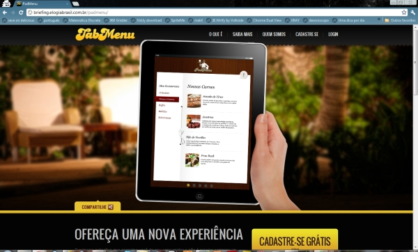

Não vamos entrar no mérito de o quanto a acessibilidade é importante. Vamo direto ao ponto!
Quer saber a importancia? Vai na palestra do Horácio que ele é sinistro.
É bom prover algum fallback para caso o client esteja com o JS desligado.
no-js
<html class="no-js">
É só retirar ela do html via JavaScript e utilizar a herança do CSS...
Existem diversas maneiras (além destas!) de retirar uma class do html
//js puro
document.documentElement.className.replace(/(^|\s)no-js(\s|$)/, '$1$2');
//jQuery ou Mootools
$("html").removeClass("no-js");
//Dojo
dojo.query("html").removeClass("no-js");
Lembre-se que o Modernizr faz isso automagicamente! :)
Quando tem JS nossas abas estão todas no mesmo ponto, somente com a ativa visível.
Sem JS ficam uma em baixo da outra e visiveis.
#abas{ position:relative; }
#abas .aba{
position:absolute;
top:30px;left:0;
display:none;
/*...*/
}
#abas .aba.ativa{
display:block;
}
.no-js #abas .aba{
position:static;
display:block!important;
}
Tabmenu foi um site onde eu fiz o front e meu amigo Girard foi o designer. Os paineis do topo, o form de login e os sliders ficam bem apresentaveis quando o JS está desligado.
Você não precisa usar links somente para ligar páginas externas. Use âncoras internas!
<section id="abas">
<nav class="menu_abas">
<a href="#aba1">Aba 1</a>
<a href="#aba2">Aba 2</a>
<a href="#aba3">Aba 3</a>
</nav>
<section id="aba1" class="aba">
<!-- ... -->
</section>
<section id="aba2" class="aba">
<!-- ... -->
</section>
<section id="aba3" class="aba">
<!-- ... -->
</section>
</section>
Dessa maneira você pode reescrever os comportamentos do link via script, e quem não tem suporte à JS pode navegar tranquilamente pelo seu menu.
//usando jQuery
$("#abas").on("click", ".menu_abas a", function(event){
var $target = $(this.hash); //this.hash é a parte #etc do href
event.preventDefault(); //cancela o comportamento que faria a página rolar até o alvo
$(".aba").not($target).hide();
$target.show();
});
Via touchscreen não tem onmouseover e onmousedown!
Sabe aquele menu dropdown lindo que você criou?
O cara num tablet nunca vai conseguir usar...
//usando jQuery
$(".dropdown>a").hover(function(){
$(this).click();//no onmouseover a gente dispara o onclick
},function(){
// no onmouseout a gente esconder menu
}).click(function(){
// no onclick a gente mostra o menu normalmente
});
tabindex é seu amigo...E dos seus usuários também!
Os elementos a, area, button, input, object, select e textarea por padrão podem receber foco do cursor.
Então, o usuário num screen reader pode sair dando TAB que ele vai navegar por entre esses elementos da sua página... mas e os outros elementos?
tabindex="0" to the rescue!
Usando tabindex="0" o elemento entra na lista de elementos focaveis...
<div id="interativo" tabindex="0">
Hello Screen Reader! TAB me :)
</div>
ARIA-Roles servem para que você diga ao client que aquele elemento segue uma regra especial, ou seja: que ele é alguma coisa diferente.
São aplicadas usando o atributo role.
No HTML:
<div role="alert">
</div>
No JS:
var alert = document.createElement("div");
alert.setAttribute("role", "alert");
Antes:
.alert{
background:#0f0;
text-align:center;
font-size:2em;
}
[role=alert]]{
background:#0f0;
text-align:center;
font-size:2em;
}
No W3C tem uma lista enorme de todas elas.
Indicam ao client que aquele elemento é um ponto navegavel do documento.
Screen readers costumam permitir a navegação por elas via teclado.
Estrutura básica de um site qualquer.
<body>
<header role="banner">
<!-- Cabeçalho da página -->
</header>
<div id="main" role="main">
<!-- Conteúdo principal do site -->
<div>
<footer role="contentinfo">
<!-- Rodapé do site -->
</footer>
</body>
Servem para indicar que parte da interface rica onde o usuário pode interagir
<section id="abas" role="tablist">
<nav class="menu_abas" role="tab">
<a href="#aba1" id="tabnav1" role="tab">Aba 1</a>
<a href="#aba2" id="tabnav2" role="tab">Aba 2</a>
<a href="#aba3" id="tabnav3" role="tab">Aba 3</a>
</nav>
<section id="aba1" role="tabpanel" aria-labeledby="tabnav1" class="aba">
<!-- ... -->
</section>
<section id="aba2" role="tabpanel" aria-labeledby="tabnav2" class="aba">
<!-- ... -->
</section>
<section id="aba3" role="tabpanel" aria-labeledby="tabnav1" class="aba">
<!-- ... -->
</section>
</section>
Live regions indicam ao client que naquela region alguma coisa vai acontecer.
Ou seja: Vai rolar AJAX.
<ol class="lista-materias" role="log" aria-alive="polite" aria-atomic="true" aria-relevant="additions" aria-controls="paginacao">
<!-- ... -->
<button id="paginacao">Mais</button>
</ol>
aria-live, aria-relevant, aria-atomic, aria-controls, aria-labelledby, aria-describedby.
http://wiki.codetalks.org/wiki/index.php/How_to_use_ARIA_Live_Regions_for_dynamic_content
Usei várias ideias dadas pelos mestres Horácio Soares e Cesar Cusin
Dúvidas, correções e sugestões são sempre bem-vindas.
Gostou?